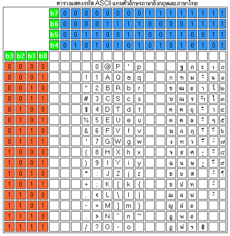

📖 ทฤษฎีก่อนใช้ Simulator
📡 Section 1: UART คืออะไร?
📘 UART - Universal Asynchronous Receiver-Transmitter
- ความหมาย: วงจรสื่อสารข้อมูลแบบอนุกรม (Serial) ที่ส่งข้อมูลโดยไม่ต้องมีสัญญาณนาฬิการ่วม
- เปรียบเทียบง่ายๆ: เหมือนส่งจดหมาย — ทั้งสองฝ่ายต้องตกลงกันล่วงหน้าว่าจะอ่านเร็วแค่ไหน (Baud Rate)
- ตัวอย่างการใช้งาน: Arduino Serial Monitor, GPS Module, Bluetooth HC-05, ESP8266
Asynchronous (อะซิงโครนัส) หมายความว่า ไม่มีสาย Clock แยกมาให้ ดังนั้นทั้ง 2 ฝ่ายต้องตั้ง Baud Rate ให้ตรงกัน จึงจะสื่อสารกันได้
💡 SPI vs UART: SPI ใช้สาย SCLK ส่งจังหวะ (Synchronous) แต่ UART ไม่มี — ทั้งสองฝ่ายต้อง "นัดเวลา" กันเอง
🔌 Section 2: สายสัญญาณ UART (2 เส้นหลัก)
UART ใช้สายน้อยมาก — แค่ 2 เส้น ก็สื่อสารได้ (ไม่นับ GND)
🟠 TX - Transmit (สายส่งข้อมูล)
- ทิศทาง: ออกจากตัวเอง → เข้าอีกฝ่าย
- เปรียบเทียบ: เหมือน "ปาก" ที่ใช้พูดส่งข้อความออกไป
- การต่อ: TX ของอุปกรณ์ A → ต่อกับ RX ของอุปกรณ์ B
🔵 RX - Receive (สายรับข้อมูล)
- ทิศทาง: รับข้อมูลจากอีกฝ่ายเข้ามา
- เปรียบเทียบ: เหมือน "หู" ที่ใช้ฟังข้อความที่ส่งมา
- การต่อ: RX ของอุปกรณ์ A → ต่อกับ TX ของอุปกรณ์ B
⚠️ สำคัญ: ต้องไขว้สาย (Cross-over) — TX ต่อ RX เสมอ! ถ้าต่อ TX-TX จะไม่ทำงาน
⏱️ Section 3: Baud Rate คืออะไร?
📘 Baud Rate
- ความหมาย: ความเร็วในการส่งข้อมูล หน่วยเป็น bits per second (bps)
- เปรียบเทียบ: เหมือนความเร็วในการพูด — ถ้าคนพูดเร็วไม่เท่ากับคนฟัง ก็จะฟังไม่เข้าใจ
- ค่าที่ใช้บ่อย: 9600, 115200 bps
| Baud Rate | ความเร็ว | ใช้งานบ่อยกับ |
|---|---|---|
| 9600 | ช้า แต่เสถียร | GPS, Sensor ทั่วไป |
| 19200 | ปานกลาง | อุปกรณ์อุตสาหกรรม |
| 115200 | เร็ว | Arduino Serial Monitor, ESP |
⚡ กฎสำคัญ: ทั้ง 2 ฝ่ายต้องตั้ง Baud Rate ให้ตรงกัน ถ้าไม่ตรง → ข้อมูลที่รับจะเป็น "ขยะ" (Garbage Data)
🔤 Section 4: ASCII คืออะไร?
📘 ASCII - American Standard Code for Information Interchange
- ปัญหา: คอมพิวเตอร์รู้จักแค่ 0 กับ 1 เท่านั้น — แล้วจะส่งตัวอักษร 'A' ผ่านสาย UART ได้ยังไง?
- คำตอบ: ASCII คือ ตารางข้อตกลงกลาง ที่บอกว่าตัวอักษรแต่ละตัว = เลขอะไร เช่น 'A' = 65
- เปรียบเทียบ: เหมือนรหัสมอร์ส — ทุกคนต้องตกลงใช้ตารางเดียวกันจึงจะเข้าใจตรงกัน
ตัวอย่างที่ใช้บ่อย:
| ตัวอักษร | Decimal | Binary (8 bit) |
|---|---|---|
| 'A' | 65 | 01000001 |
| 'B' | 66 | 01000010 |
| 'a' | 97 | 01100001 |
| '0' | 48 | 00110000 |
| Space | 32 | 00100000 |
ตารางรหัส ASCII ฉบับเต็ม (แทนตัวอักษรภาษาอังกฤษและภาษาไทย):

💡 เชื่อมกับ UART: เวลากด "ส่ง A" ใน Simulator — UART ไม่ได้ส่งตัวอักษร 'A' โดยตรง แต่แปลง 'A' เป็น 01000001 แล้วส่งทีละบิตผ่านสาย TX
🎮 ทดลองแปลง ASCII แบบ Interactive — คลิกตัวอักษรหรือกรอกค่าเองได้เลย
📦 Section 5: โครงสร้าง Data Frame (UART Packet)
UART ส่งข้อมูลเป็น "กรอบ" (Frame) ทีละ 1 ตัวอักษร โดยมีโครงสร้างดังนี้:
| ส่วน | จำนวนบิต | หน้าที่ |
|---|---|---|
| Start Bit | 1 bit | บอกว่า "เริ่มส่งแล้วนะ" (LOW) |
| Data Bits | 5-9 bits (ปกติ 8) | ข้อมูลจริงๆ ที่ต้องการส่ง |
| Parity Bit | 0-1 bit (ไม่บังคับ) | ตรวจสอบความถูกต้อง |
| Stop Bit | 1-2 bits | บอกว่า "ส่งเสร็จแล้ว" (HIGH) |
📘 อธิบายแต่ละส่วน
- Start Bit: สายที่ปกติเป็น HIGH จะดึงลง LOW 1 บิต — เหมือนกดกริ่งบอกว่า "มีข้อมูลมา!"
- Data Bits: ข้อมูลจริง ส่ง LSB ก่อน (บิตค่าน้อยสุดก่อน)
- Parity Bit: ตรวจสอบว่าข้อมูลถูกต้องไหม — นับจำนวน 1 ในข้อมูล แล้วเพิ่มบิตให้ครบตามเงื่อนไข (ไม่บังคับใช้)
- Stop Bit: ดึงสายกลับ HIGH — เหมือนจบประโยค บอกว่า "พูดจบแล้ว"
📝 ตัวอย่าง: ส่งตัว 'A' (ASCII 65 = 01000001) → Frame = [Start:0] [Data:1-0-0-0-0-0-1-0] [Stop:1] — ส่ง LSB first!
📘 ตัวอย่างการคำนวณ Parity Bit — ส่งตัว 'A' (01000001)
ขั้นตอน: นับจำนวนบิต 1 ในข้อมูล → 01000001 มี 1 อยู่ 2 ตัว (ตำแหน่ง bit0 กับ bit6)
- Even Parity: ต้องการให้นับ 1 รวม Parity เป็นเลขคู่ → ปัจจุบันมี 2 ตัว (คู่อยู่แล้ว) → Parity Bit = 0
- Odd Parity: ต้องการให้นับ 1 รวม Parity เป็นเลขคี่ → ปัจจุบันมี 2 ตัว (ต้องเพิ่ม 1) → Parity Bit = 1
Frame (Even): [Start:0] [Data:1-0-0-0-0-0-1-0] [Parity:0] [Stop:1]
Frame (Odd): [Start:0] [Data:1-0-0-0-0-0-1-0] [Parity:1] [Stop:1]
🔋 Section 6: Idle State และ Logic Level
เมื่อ UART ไม่ได้ส่งข้อมูล สายจะคงสถานะ HIGH (Logic 1) เรียกว่า Idle State
📘 Logic Level
- Idle (ว่าง): สาย = HIGH (1) — ปกติไม่มีอะไรเกิดขึ้น
- Start Bit: สายดึงลง LOW (0) — "เตรียมรับข้อมูล!"
- Stop Bit: สายกลับ HIGH (1) — "ส่งเสร็จแล้ว กลับปกติ"
💡 เพราะ Idle = HIGH ดังนั้น Start Bit จะเปลี่ยนจาก HIGH→LOW (Falling Edge) ทำให้ฝั่งรับรู้ว่า "มีข้อมูลกำลังมา"
📊 ภาพประกอบ: สัญญาณ UART ขณะส่งตัวอักษร 'A' (ASCII 65 = 01000001, LSB first)
🔄 Section 7: UART เป็น Full-Duplex
เนื่องจาก UART มีสาย TX และ RX แยกกัน จึงสามารถส่งและรับข้อมูลพร้อมกันได้
📘 รูปแบบการสื่อสาร
- Full-Duplex: ส่งและรับพร้อมกัน (TX+RX แยกคนละสาย) — เหมือนคุยโทรศัพท์
- Point-to-Point: UART เชื่อมต่อได้แค่ 2 อุปกรณ์ (1 ต่อ 1)
- ไม่มี Master/Slave: ทั้งสองฝ่ายเท่าเทียม สามารถส่งข้อมูลเมื่อไหร่ก็ได้
⚡ UART vs SPI: SPI มี Master ควบคุมทั้งหมด + เชื่อมได้หลาย Slave แต่ UART เป็นแบบ 1 ต่อ 1 ไม่มีใครเป็นเจ้านาย
📤 Section 8: ขั้นตอนการส่งข้อมูล UART
-
สายอยู่ในสถานะ Idle (HIGH)
ทั้ง TX และ RX ค้างที่ HIGH — ยังไม่มีการส่งข้อมูล
-
ส่ง Start Bit (ดึงสาย LOW)
ฝ่ายส่งดึง TX ลง LOW 1 บิต — บอกอีกฝ่ายว่า "ข้อมูลกำลังมา!"
-
ส่ง Data Bits (LSB first)
ส่งข้อมูล 8 บิตทีละบิต เริ่มจากบิตค่าน้อยสุด (LSB) ก่อน
-
ส่ง Parity Bit (ถ้าตั้งค่าไว้)
ส่งบิตตรวจสอบ — Even Parity: นับ 1 ให้เป็นเลขคู่, Odd: เลขคี่
-
ส่ง Stop Bit (ดึงสาย HIGH)
ดึง TX กลับ HIGH 1-2 บิต — บอกว่า "ส่ง 1 frame เสร็จแล้ว"
⏱️ เวลาทั้งหมด: ที่ Baud Rate 9600 → 1 bit ≈ 104μs → 1 frame (10 bits) ≈ 1.04ms
📚 แหล่งอ้างอิง
- Analog Devices - UART: A Hardware Communication Protocol
- SparkFun - Serial Communication
- Arduino - UART Documentation
- Texas Instruments - UART Technical Reference Manual
🎮 จำลองการส่งข้อมูล UART
Device A
Device B
📊 สัญญาณ UART (Waveform)
📤 ข้อมูลที่ส่ง (TX)
📥 ข้อมูลที่รับ (RX)
🎛️ แผงควบคุม
💡 คำอธิบาย
กรอกตัวอักษรที่ต้องการส่ง แล้วกด "ส่งข้อมูล" เพื่อดูการส่งข้อมูลแบบอัตโนมัติ หรือกด "ทีละบิต" เพื่อดูทีละขั้นตอน
สังเกตว่า UART จะส่ง Start Bit (LOW) ก่อน → Data 8 bits (LSB first) → Stop Bit (HIGH)
📋 บันทึกการทำงาน
แบบฝึกหัด UART Protocol
ฝึกทักษะ 3 ด้าน: แปลง ASCII↔Binary, ลำดับ Frame, และอ่าน Waveform
ทำเสร็จรับใบส่งงาน PDF พร้อมส่งครู
* กรุณากรอกชื่อก่อนเริ่มทำแบบฝึกหัด
แบบทดสอบความเข้าใจ UART Protocol
ทดสอบความรู้จากเนื้อหาทฤษฎีที่เรียนมา (10 ข้อ)
* กรุณากรอกชื่อก่อนเริ่มทำแบบทดสอบ